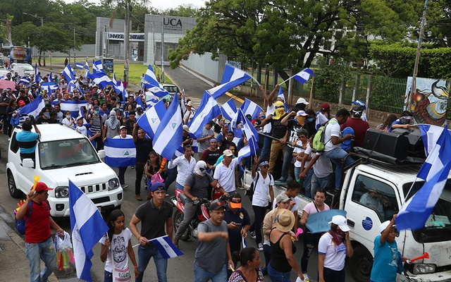

Migración internacional y desarrollo en Nicaragua
A partir del análisis de los flujos migratorios nicaragüenses es posible señalar que éste es un fenómeno reciente que no tiene más de 25 años de antigüedad. Su actual situación es producto de una conjunción de factores socioeconómicos y políticos, como los fuertes cambios políticos en el país en la década de los ochenta y las transformaciones en el sistema productivo en los noventa. Es así que actualmente Nicaragua tiene a cerca del 10% de su población viviendo en otros países y es uno de los principales receptores de remesas de América Latina —con relación a su producto.
